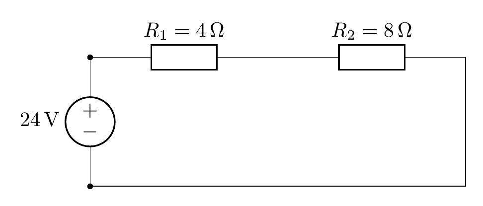
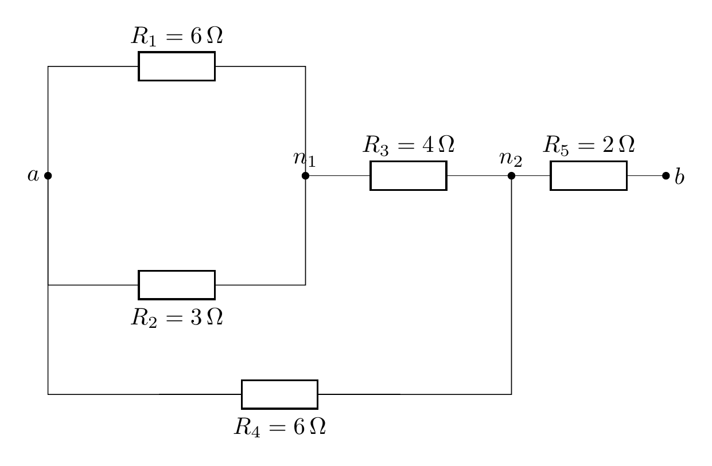
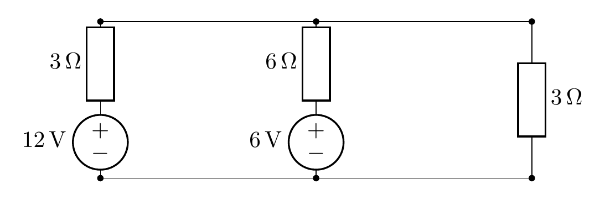
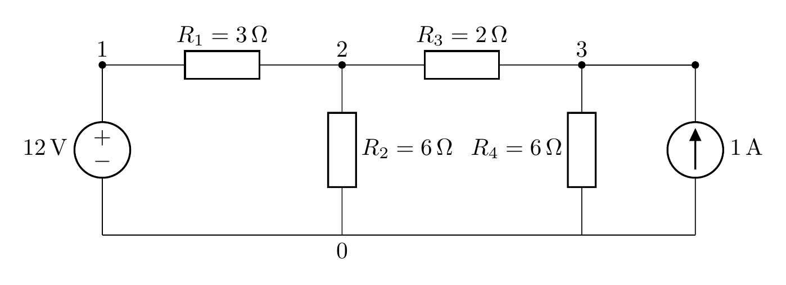
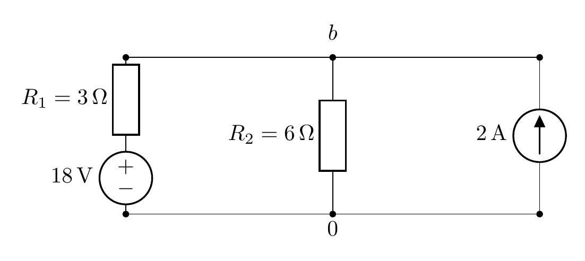
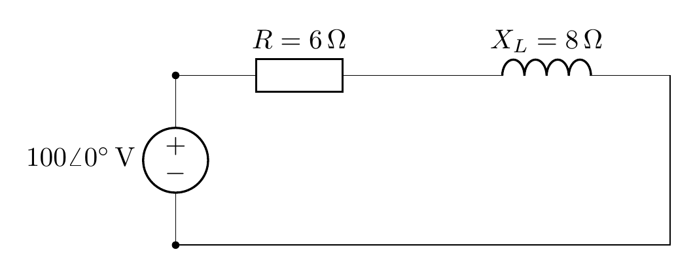

基础卷：覆盖大纲第一到第四章 + 第八九章，每题都是考试常见形态。
使用方式：先按 90 分钟做完，再逐题展开答案对分。答案里标了每一步的来路，只看结论学不到东西——对答案时重点看你哪一步开始偏。
$24\ \mathrm{V}$ 电压源与 $R_1 = 4\ \Omega$、$R_2 = 8\ \Omega$ 串联成闭合回路。
（1）求回路电流；（2）求 $R_1$、$R_2$ 和电压源各自的功率，并说明是吸收还是发出；（3）若把电流的参考方向反过来设，各功率的符号会怎样变化？

图 · 24 V 与 4 Ω、8 Ω 串联
（1）$I = \dfrac{24}{4+8} = 2\ \mathrm{A}$。
（2）$P_{R1} = I^2R_1 = 4 \times 4 = 16\ \mathrm{W}$（吸收）；$P_{R2} = 4 \times 8 = 32\ \mathrm{W}$（吸收）；电压源发出 $24 \times 2 = 48\ \mathrm{W}$。
校验：$16 + 32 = 48$ ✓
（3）功率的实际值不变，因为 $P=UI$ 里 $U$、$I$ 同时反号；按关联参考方向判断时，吸收/发出的结论也不变，只是算式里正负号换了写法。这一问考的是：参考方向是人为设的，不改变实际功率。
端口 a—b。$R_1 = 6\ \Omega$ 与 $R_2 = 3\ \Omega$ 并联接在 a 与 n1 之间；n1 经 $R_3 = 4\ \Omega$ 接到 n2；$R_4 = 6\ \Omega$ 直接接在 a 与 n2 之间；n2 经 $R_5 = 2\ \Omega$ 接到 b。求输入电阻 $R_{ab}$。

图 · R₁∥R₂ 后串 R₃，再与 R₄ 并联，最后串 R₅
（1）求 $R_{ab}$；（2）写出化简的每一步顺序。
$R_1 \parallel R_2 = \dfrac{6\times3}{9} = 2\ \Omega$
与 $R_3$ 串联：$2 + 4 = 6\ \Omega$
这个 $6\ \Omega$ 与 $R_4 = 6\ \Omega$ 并联（都接在 a 与 n2 之间）：$6 \parallel 6 = 3\ \Omega$
再与 $R_5$ 串联：$$R_{ab} = 3 + 2 = 5\ \Omega$$
顺序：最里层并联 → 串联 → 外层并联 → 串联。每次只合并"确实只有一个公共节点或两端同节点"的那一对。
$12\ \mathrm{V}$ 串 $3\ \Omega$ 与 $6\ \mathrm{V}$ 串 $6\ \Omega$ 并接在同一对端子上，外接 $3\ \Omega$ 负载。
（1）求对外等效的电压源；（2）用等效电路求负载电流；（3）能否用等效电路求原来两个电源各自发出的功率？

图 · 两个实际电压源并联，外接 3 Ω 负载
（1）转电流源：$12/3 = 4\ \mathrm{A}$、$6/6 = 1\ \mathrm{A}$。合并：$I_s = 5\ \mathrm{A}$，$R = 3\parallel6 = 2\ \Omega$。转回：$U_s = 5\times2 = 10\ \mathrm{V}$，内阻 $2\ \Omega$。
（2）$$I = \frac{10}{2+3} = 2\ \mathrm{A}$$
（3）不能。 等效只保证端口对外一致，两个原电源在等效电路里已经合并成一个，各自的电流和功率无法反推。要算就得回到原电路，先求各支路真实电流。
$12\ \mathrm{V}$ 电压源接在节点 1 与地之间；$R_1 = 3\ \Omega$ 接 1–2；$R_2 = 6\ \Omega$ 接 2–地；$R_3 = 2\ \Omega$ 接 2–3；$R_4 = 6\ \Omega$ 接 3–地；$1\ \mathrm{A}$ 电流源注入节点 3。
（1）列节点方程并求 $V_2$、$V_3$；（2）求四条支路的电流；（3）用 KCL 验算节点 2。

图 · 节点 1 接电压源，1 A 注入节点 3
（1）节点 2：$\dfrac{V_2-12}{3} + \dfrac{V_2}{6} + \dfrac{V_2-V_3}{2} = 0$，乘 6 得 $2V_2 - V_3 = 8$。
节点 3：$\dfrac{V_3-V_2}{2} + \dfrac{V_3}{6} = 1$，乘 6 得 $4V_3 - 3V_2 = 6$。
联立解得 $$V_2 = 7.6\ \mathrm{V},\qquad V_3 = 7.2\ \mathrm{V}$$
（2）$I_{R1} = \dfrac{12-7.6}{3} = 1.467\ \mathrm{A}$（1→2）
$I_{R2} = \dfrac{7.6}{6} = 1.267\ \mathrm{A}$（2→地）
$I_{R3} = \dfrac{7.6-7.2}{2} = 0.2\ \mathrm{A}$（2→3）
$I_{R4} = \dfrac{7.2}{6} = 1.2\ \mathrm{A}$（3→地）
（3）节点 2：流入 $1.467$，流出 $1.267 + 0.2 = 1.467$ ✓
注意：题目问"支路电流"就不能只交节点电位，这一问占的分不少。
节点 b 与地之间：左侧 $R_1 = 3\ \Omega$ 串 $18\ \mathrm{V}$ 电压源（正极朝 b）；中间 $R_2 = 6\ \Omega$；右侧 $2\ \mathrm{A}$ 电流源注入 b。
（1）画出两个分电路；（2）分别求两个分量；（3）求 $V_b$，并用节点法验算。

图 · 三条并联支路，2 A 注入 b
只留电压源（电流源断开）：$R_1$、$R_2$ 串联分压，$V_b' = 18 \times \dfrac{6}{3+6} = 12\ \mathrm{V}$。
只留电流源（电压源短接）：$R_1\parallel R_2 = 2\ \Omega$，$V_b'' = 2 \times 2 = 4\ \mathrm{V}$。
同号相加：$$V_b = 12 + 4 = 16\ \mathrm{V}$$
节点法：$\dfrac{V_b-18}{3} + \dfrac{V_b}{6} = 2$，乘 6 得 $2V_b - 36 + V_b = 12$，$3V_b = 48$，$V_b = 16\ \mathrm{V}$ ✓
串联电路：$R = 6\ \Omega$，$X_L = 8\ \Omega$，接在 $\dot U = 100\angle0^\circ\ \mathrm{V}$（有效值）上。
（1）求 $\dot I$ 和有效值；（2）求有功、无功、视在功率和功率因数；（3）说明电流超前还是滞后。

图 · 电阻与电感串联
（1）$Z = 6 + j8\ \Omega$，$|Z| = 10\ \Omega$，$\varphi = 53.13^\circ$。
$$\dot I = \frac{100\angle0^\circ}{10\angle53.13^\circ} = 10\angle{-53.13^\circ}\ \mathrm{A}$$
有效值 $I = 10\ \mathrm{A}$。
（2）$P = I^2R = 100 \times 6 = 600\ \mathrm{W}$；$Q = I^2X_L = 800\ \mathrm{var}$（感性取正）；$S = UI = 1000\ \mathrm{VA}$。
$\cos\varphi = \dfrac{6}{10} = 0.6$。
（3）阻抗角为正（感性），电流滞后电压 $53.13^\circ$。
校验：$S^2 = P^2 + Q^2$，$10^6 = 3.6\times10^5 + 6.4\times10^5$ ✓
评分参考：90 分以上可以上考场；70–89 分重点看丢分在哪一题；70 分以下建议把对应课再走一遍，尤其是节点法"求支路电流"和相量功率的符号。